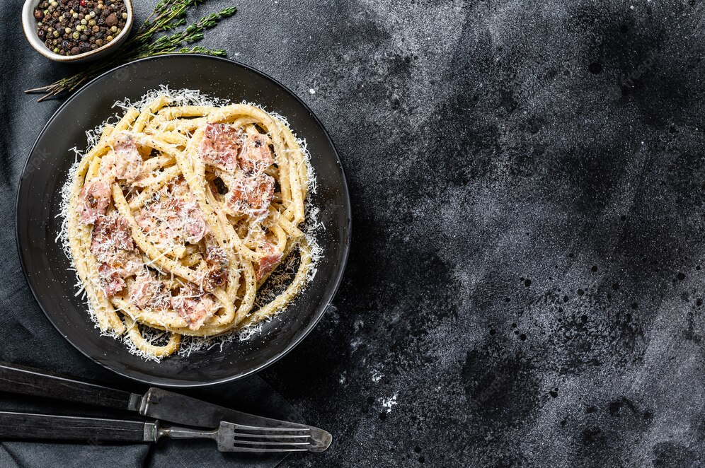

Carbonara

Description
>
Simple italian pasta consisting of eggs, noodles, cheese, and pork. A house favorite.
Ingredients
- Kosher Salt
- Pancetta
- Parmesan
- Eggs
- Olive oil
- Spaghetti Noodles
- Ground pepper
Steps
- Cook the noodles in boiling water
- Cut the pancetta into small strips
- Whisk the eggs (mostly egg yolk) and stir in the Parmesan cheese
- Cook the pancetta
- Mix in the egg mixture into the cooked noodles and season with salt
- Add the cooked pancetta and serve with ground pepper